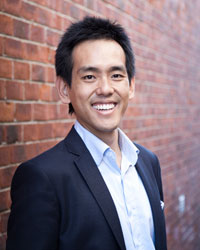
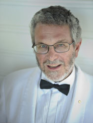
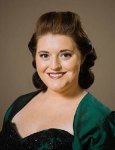
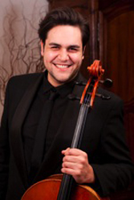

Great Barrier Reef Orchestra Benefactors
Special Guests

Mark has guest-conducted ensembles including the Melbourne Symphony Orchestra, West Australian Symphony, Moscow Symphony Orchestra, State Academic Symphony Orchestra of St. Petersburg, Victorian Opera, Orchestra Ensemble Kanazawa, Canberra Symphony Orchestra, Sydney Sinfonia, Melbourne Youth Orchestra, University of Melbourne Symphony Orchestra and the Orchestras of the State Music Camps in Melbourne and Adelaide. Currently he serves as Artistic Director and Principal Conductor of Zelman Symphony Orchestra, the Ballarat Symphony and the Macquarie Philharmonia. His love of community and youth music has kept him busy contributing to the growth and development of important initiatives in both of these areas here in Australia. Most recently, Mark developed a Regional Orchestra Weekend for ensembles from across Victoria to meet and perform together, with the aim to make this an annual event. Mark is also passionate about the education and training of future conductors, and has been frequently involved as a guest teacher of the Masters of Conducting students at the Melbourne Conservatorium in 2015.

Adam Lopez’s exceptional vocal artistry has paved opportunities to perform backing vocals for some of the biggest names in the music industry such as Mariah Carey, Keith Urban and The Coors. His most recent noted collaboration was headlining with Australian Jazz legend James Morrison in a string of Symphonic Concerts in Perth, Hobart and Brisbane. His discography includes an eclectic collection of genres spanning from Pop-Opera, Pop, Rhythm &Blues, Jazz, Power Ballads and Fiery Latin! His phenomenal vocal range smashed two Guinness World Records (one note above the range of a piano!) This achievement has astounded audiences from all around the world leading him to perform and appear on international television and radio stations in Japan, Spain, Italy, Korea, Hong Kong and the USA. Adam Lopez has undoubtedly got one of the most fascinating vocal instruments on the planet. He delighted audiences when he sang in Townsville with the Barrier Orchestra in 2012 along with Sean O’Boyle and James Morrison.

Domenico is one of Brisbane’s most experienced and versatile multicultural entertainers. He has performed in almost every possible style since he commenced his musical career in 1971 at age 4. He studied music on the traditional European instrument called the Piano Accordion and this is still his chosen instrument, although he also now uses the latest electronic midi accordion which incorporates other built in instruments. Domenico moved from three piece cabaret bands to a more sophisticated five piece band, the Latin Mafia which performs swing and Latin classics from the Rat Pack era. He has performed in many venues from QPAC with the Queensland Pops Orchestra to being runners up with his Celtic Band, Murphy’s Pigs at the Tamworth Golden Fiddle Awards.

Domenico is one of Brisbane’s most experienced and versatile multicultural entertainers. He has performed in almost every possible style since he commenced his musical career in 1971 at age 4. He studied music on the traditional European instrument called the Piano Accordion and this is still his chosen instrument, although he also now uses the latest electronic midi accordion which incorporates other built in instruments. Domenico moved from three piece cabaret bands to a more sophisticated five piece band, the Latin Mafia which performs swing and Latin classics from the Rat Pack era. He has performed in many venues from QPAC with the Queensland Pops Orchestra to being runners up with his Celtic Band, Murphy’s Pigs at the Tamworth Golden Fiddle Awards. He performs a diverse range of musical styles from around the world and will be a great asset to our World Music Concert. 2015 has taken David to Turkey, Italy, France and the United Kingdom with private and public performances and now brings him to Townsville.

Raymond Yong was born in Malaysia, emigrating to Australia at the age of two. He received his initial musical training in Perth, performing regularly in public piano recitals from an early age. It was in High School that he forst took to the podium as a conductor, directing his school orchestra and choir. Raymond went on to study conducting at the University of Melbourne as a pupil of the late John Hopkins and received further training in the Symphony Australia Young Development Programme. He became the Music Director of the Victorian Youth Symphony Orchestra and Victoria Chorale and was the Founding Director of Orchestra 21. He has appeared as Guest Conductor for the Melbourne Chamber Orchestra, the Port Fairy Music Festival, Stonnington Symphony, Preston Symphony, and Kooyong Chamber Players. He has been a regular guest with the barrier Reef Orchestra since 2011,conducting the orchestra, performing as a piano soloist, and providing conducting workshops to teachers and conductors in the Townsville area. Raymond is also a sought-after piano soloist and accompanist. Concert highlights include Chamber Music performances at the Musica Viva, Huntington Festival, the Linari Classic in Italy, as well as piano concerto engagements with the Melbourne Symphony, the Sydney Symphony, West Australian and Tasmanian Symphony Orchestras.

Jennifer Bradstreet completed a Bachelor of Music with Honours at the Sydney Conservatorium, before taking up a summer scholarship at St Andrews and Oxford in the UK, and then moving to London in 2010. She became a student at the Royal College of Music under British flautist Susan Milan, and graduated with a Postgraduate Diploma of Performance in 2011. While in London, she played in side-by-side projects with the London Symphony and was invited onto the prestigious BBC Symphony Orchestral pathway. Many summer scholarships and international master-classes followed, in Germany, England and Italy. In 2013, Jennifer accepted a Masters scholarship under James Kortum and Aldo Baerten (Belgium) at the Sydney Conservatorium, where she will complete her studies this year. She was a finalist in the 2013 Australian Flute Festival Orchestral Flute Competition and first-prize winner in the 2014 Australian Concerto & Vocal Competition (all instruments). She is active as a soloist and chamber musician, and also performs regularly with the Australian Opera and Ballet Orchestra in Sydney, with whom she has freelanced since 2013.

Townsville based harpist Leah Xiang Li enjoys a diverse career as an orchestral and chamber musician, soloist, instrumental teacher and primary school language teacher. Leah graduated from the Queensland Conservatorium Griffith University under the tutelage of Sebastien Lipman. She was the recipient of Ross Peters 4MBS Chamber Music Prize and performed for the Honourable Dame Quentin Bryce (former Governor-General of Australia). She was also the principal harpist for Australian International Symphony Orchestra Institution, Queensland Youth Symphony Orchestra, Queensland Conservatorium Symphony Orchestra and Queensland Conservatorium Opera Orchestra. Leah‘s repertoire spans from the Baroque to the present day. She has a special interest in Jazz and is seeking to fulfil this passion through further study. Leah is also dedicated to education, community outreach and musical advocacy as demonstrated by her current involvement in Barrier Reef Orchestra.

Richard has maintained a long and distinguished career as bassoonist, music educator, conductor and arranger. A Composition graduate from Sydney University, he was appointed Associate Principal Bassoon with the Sydney Symphony Orchestra as a 20-year-old in 1968, moving to The Canberra School of Music as a foundation member of the Canberra Wind Soloists in 1978. With this renowned quintet, he recorded and toured internationally during a 30-year period, and gave it a unique repertoire with his virtuoso arrangements of large-scale orchestral works. He was for many years Principal Bassoon with the Australian Chamber Orchestra, and appeared on many occasions as guest Principal Bassoon with most of the Symphony Australia Orchestras - also as concerto soloist, and independently as a recitalist. His continuing work as Principal Bassoon with the Canberra Symphony Orchestra dates back to student days of 1965 - 67. If you'd like to hear some of his work as bassoonist, chamber musician, and arranger, you'll find it on YouTube under Canberra Wind Soloists. Simultaneously, he has sustained a career as one of Australia's most respected bassoon teachers, at all levels from beginner to post-graduate and professional. In addition he has worked tirelessly in the development of orchestral and ensemble skills with students of all instruments, particularly at the advanced tertiary level. He was for many years a regular tutor and conductor at the Australian Youth Orchestra's National Music Camps. He has taught over many years in south-east Asia. His work as a conductor is well-known, particularly in Canberra. He was Conductor and Musical Director of the Canberra Youth Orchestra from 1980 - 1990, greatly broadening its repertoire and general endeavour, and led it on three highly-successful and widely-acclaimed European tours. His Canberra contribution has included development of and much work with the School of Music Orchestra, Canberra Opera, Canberra Philharmonic Society, thirteen-years as Musical Director of The Llewellyn Choir (with development of its accompanying professional ensemble, The Canberra Chamber Orchestra), and three years as Musical Director of The Oriana Chorale. His numerous conducting activities outside of Canberra have included the foundation and development of the Barrier Reef Orchestra, with which he continues his association as Artistic Advisor and frequent conductor. His 35-year career at the Canberra (now ANU) School of Music played a significant part in the creation of its erstwhile international reputation. Awards have included 1986 Canberran of the Year, Advance Australia, Sounds Australian, and National Critics' Circle awards. In 1992 he was granted an Order of Australia Medal, for services to Music and Music Education, particularly for his work with the Canberra Youth Orchestra. In 2013, he was elected President of the Australian Double Reed Society.

Conductor Mario Dobernig grew up in a small village in the Austrian Alps before establishing his professional career as a percussionist in Graz (Austria) and Helsinki (Finland) where he worked extensively with many chamber orchestras and with ensembles such as the Graz Opera, Finnish Radio Symphony Orchestra, the Tapiola Sinfonietta and the Avanti! chamber orchestra. Mario graduated from the Art University Graz and the Sibelius Academy Helsinki. He also holds a Masters degree in Musicology from the University of Helsinki. Mario moved to Melbourne to pursue his conducting studies with John Hopkins OBE at the University of Melbourne, where he completed a Master of Music in Conducting in 2009. He is currently completing his PhD at the University of Melbourne, where he produces a performance edition of Peggy Glanville-Hicks’s opera Nausicaa. In 2011, Mario conducted Stravinsky’s Histoire du Soldat for the Woodend Winter Arts Festival, which was broadcasted on ABC classic FM. Mario has conducted ensembles at the University of Melbourne, the Victorian College of the Arts Symphony Orchestra, the Youth Philharmonic Melbourne, the Ballarat Symphony, the Ballarat Wind Orchestra, the Preston Symphony and the Kooyong Chamber Players. Since 2012 Mario is the resident conductor of the Preston Symphony and the Musical Director of Victoria Chorale. He really enjoys making music with the Barrier Reef Orchestra.

Bronwyn is a Mezzo-soprano who comes from Milton on the coast of NSW. She is currently the holder of the Amelia Joscelyne Memorial Schoarship with the Dame Nellie Melba Trust. Bronwyn graduated with a Masters in Operatic Performance from the Queensland Conservatorium in 2014, also receiving ab award for Academic Excellence and the Wagner Society Encouragement Award. She attended the Lisa Gasteen National Opera School from 2013 – 2015 as well as undertaking the Mediterranean Opera Studio Programme held in Caltigirone in Sicily. Bronwyn has performed many operatic roles in Queensland and New South Wales. She has also performed as the Alto Soloist for the Queeensland Symphony Orchestra for their 2015 Performance of the Messiah and in Vivaldi’s Gloria for the 4MBS Festival of classics in 2014. Bronwyn has received many awards, a Finalist in the Sun aria in 2015,winner of the Royal Melbourne Philharmonic Aria in 2015. She has also been placed in several competitions. In 2015 she was awarded the Champion of Champions Vocal Soloist at the North Queensland Eisteddfod and that year also won the Open Vocal Solo at the Australian Concerto and Vocal Competition. As part of that award she sang with the Barrier Reef Orchestra at the T150 Concert.

Born in Kobe, Japan, Yoshika Masuda first started to play the cello at the age of five. Following studies with George Pedersen in Australia, he went onto study at the Royal Northern College of Music in Manchester on a full scholarship. Yoshika was recently awarded first prize at both the Australian Concerto & Vocal Competition and the YMF National Debut Concerto Competition, and is also the winner of the Yamaha Music Foundation of Europe String Award. He has also won top prizes at the Sydney Cello Award, Australian National Youth Concerto Competition and the J A Beare International Solo Bach Competition. Yoshika has performed concertos and recitals throughout Australia, Austria, France, Italy, Japan, the UK and USA. Yoshika gained his Bachelor of Music with first class honours from the RNCM, receiving both the Sir John Munduell Principals’s Prize and the Leonard Rose Cello Award for outstanding achievement. He also completed his Master of Music at the RNCM with distinction the following year. Yoshika is currently continuing his studies in Los Angeles as a Doctorate student. Yoshika’s cello is a fine Carl Becker model (1930), loaned to him from a private foundation.





Life Members

Jacinta has been part of the Orchestra from the beginning when she played 1st Clarinet at the first performance on Sunday, 29th October 2000. She has been on the management committee and was a voluntary manager of the Orchestra. Jacinta has had the task of being Rehearsal Conductor on many occasions and conducted a performance in 2004. Over the years, through her teaching she has been able to encourage many players to join the Orchestra and has mentored many young woodwind players.

Alan has been Secretary of North Queensland Ensembles Inc. /Barrier Reef Orchestra for eight years. He is a former Commonwealth Government officer mainly in the Commonwealth Employment Service and prior to retirement he was the Department's Zone Manager for North Queensland. This expertise has served the Orchestra well as Alan has facilitated North Queensland Ensembles becoming incorporated and was also Secretary at the time when we employed our first Orchestra Manager. Alan has a background in community service having been a member of both Australian Jaycees and Rotary. He has also had long experience as an actor, producer and Committee member with several little theatre groups across the State.

Stephen has been involved with the Barrier Reef Orchestra since its inception; having played as concert master in the orchestra’s inaugural concert in 2000. Since then, he has missed only a couple of Barrier Reef Orchestra concerts, and has been concert master for most concerts. When not rehearsing with the BRO, Stephen is involved in a number of ensembles around Townsville. He manages and plays with the Melaleuca String Quartet, directed Strings Non Troppo, and plays in Double Play – a guitar/violin duo. Stephen has had regular involvement with the Mulkadee Arts Festival, and performs regularly in community events such as Eco Fiesta, Riverfest, Heritage Day and Stable on the Strand. In his role as concert master over the past 15 years, Stephen has enjoyed many discussions with guest conductors concerning the artistic direction of the orchestra. As a string teacher, he has encouraged many young string players to become regular members of the orchestra. Stephen loves his involvement with the orchestra, and is delighted to be joined by young players who share his passion for music. Stephen is looking forward to passing on the baton to the next BRO concert master!

Jenny Carr came to Australia from Scotland in the early 70s and instantly became an integral part of the Townsville music scene as a pianist and instrumental music teacher. In 1998 when the decision was made to establish a community orchestra, Jenny worked as librarian, performer and for many years as Manager . In conjunction with Donna McMahon and Susan Linge (from the Civic Theatre), they arranged a series of concerts for the emerging orchestra. She also played with the orchestra when a pianist was needed. As Manager, she was involved in all aspects of handling the orchestra's music and checking attendances. In later years, Jenny worked as Adjudicator’s Assistant for the Australian Vocal and Concerto Competition.

Carol has been a leading figure in music performances in Townsville for many years despite living in Ingham until the early 2000s when she moved to Townsville. Carol is a piano teacher, accompanist, and musical director of the Australian Concerto and Vocal Competition which she has led since 1991.She was involved with the others in the formation of the Barrier Reef Orchestra, and was chairperson of the North Queensland Ensembles Committee (the parent organization for the Orchestra), a position she held until 2003.

Donna has been a leader in the Townsville music community since she arrived in 1973 fresh from the Conservatorium to teach strings for Education Queensland. Until 2009 she has also been involved with the Townsville Youth Orchestra, the Australian String Teachers’ Association, the Australian Concerto & Vocal Competition, and lately of course the Barrier Reef Orchestra. Apart from being one of the prime movers in the formation of the BRO, she has been performer, rehearsal conductor, musical advisor, & visiting conductor liaison. In 2009, she was rehearsal conductor, played with the orchestra, and managed the music library. She recently graduated with a Masters Degree in Music from James Cook University.
David was heavily involved with the Townsville music scene from the 1970s, including the formation of the BRO in 1999. He was made a Life Member by the Committee in June 2006, when he and his wife Elizabeth left Townsville to live in Canberra.

Copyright © Great Barrier Reef Orchestra 2016